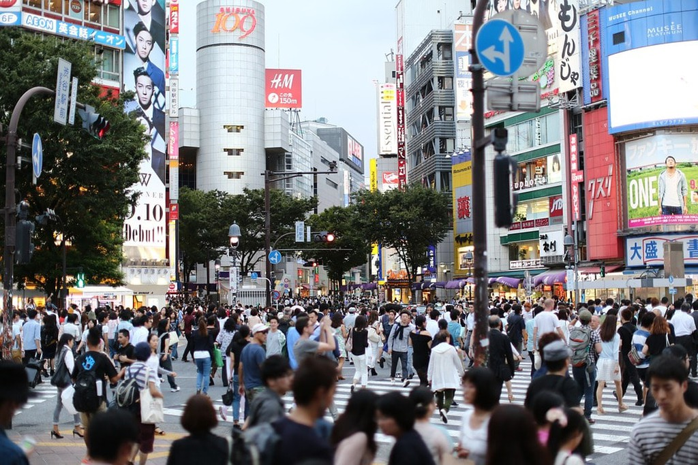
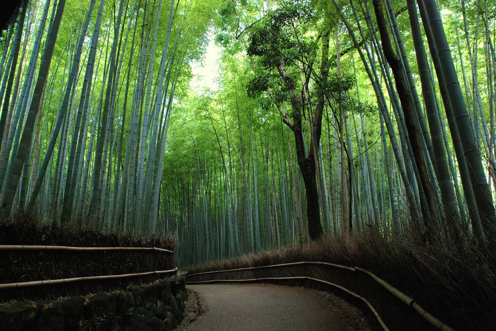
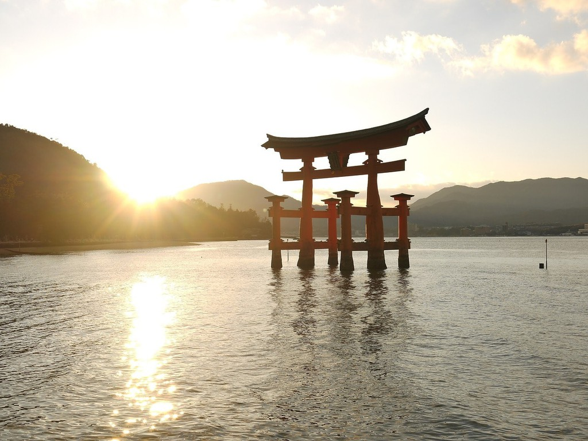
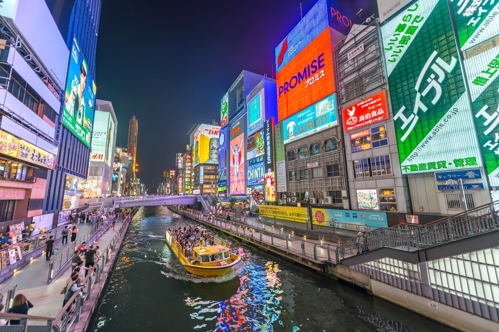
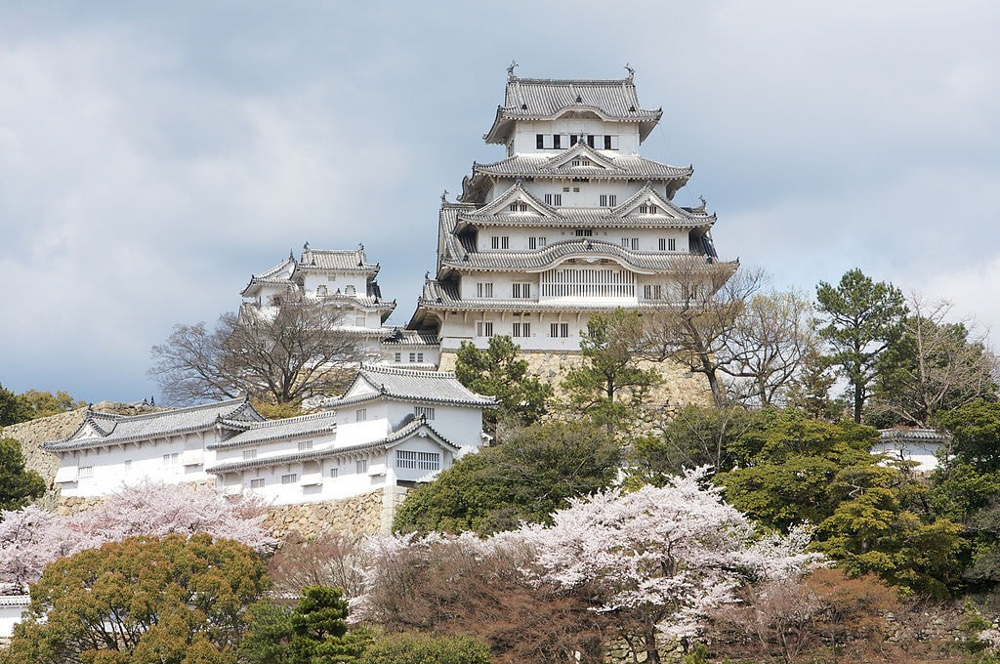
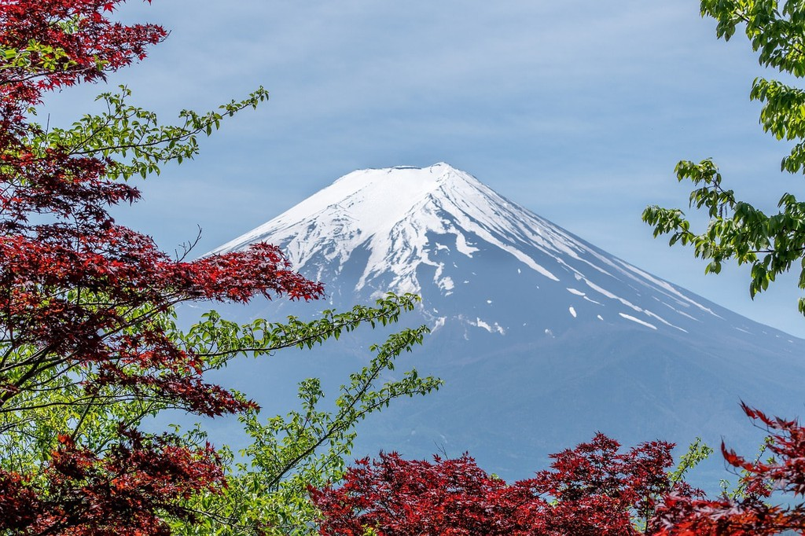
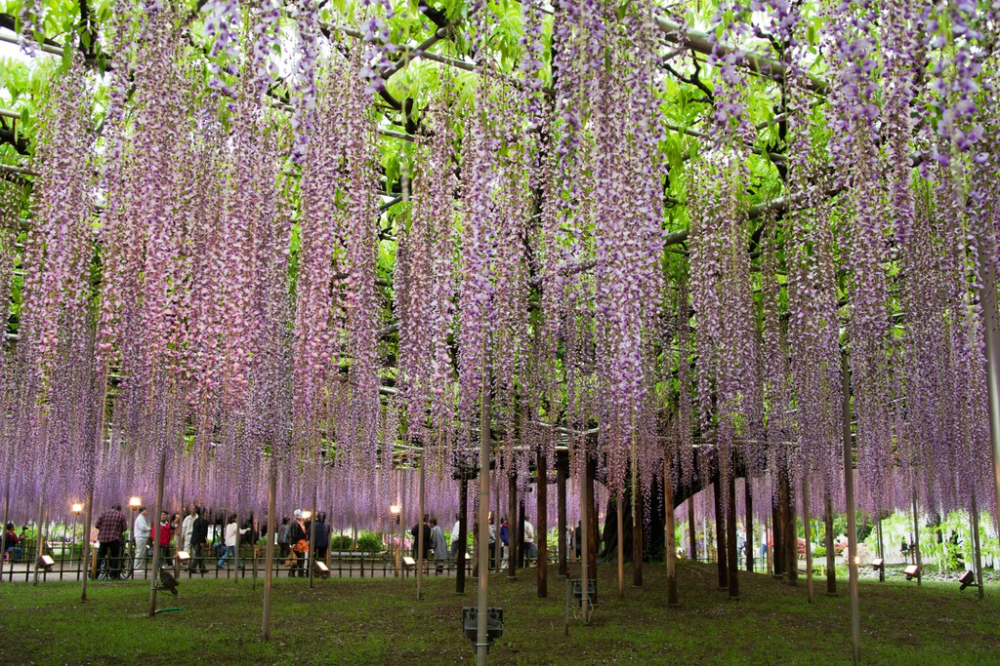
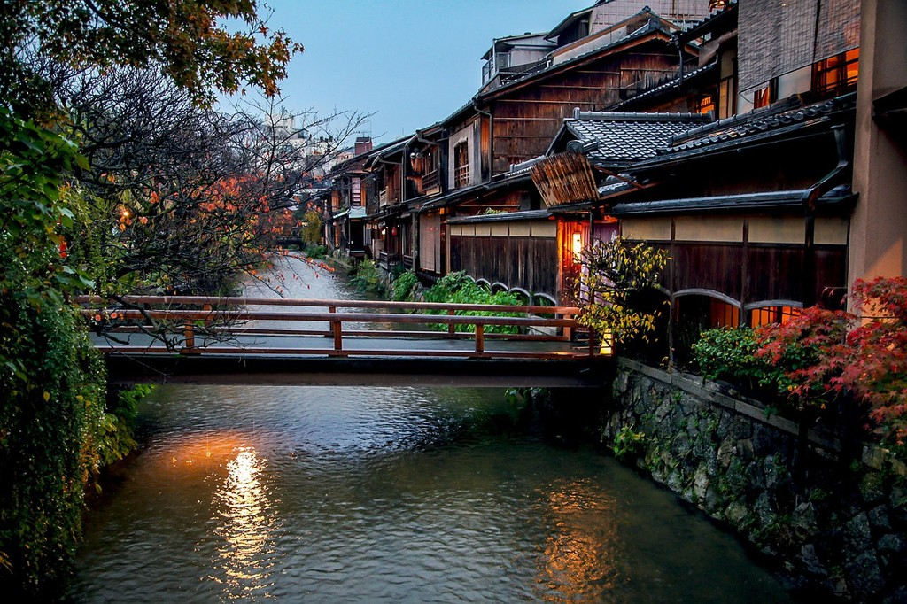

Often called the world’s busiest pedestrian scramble, Shibuya Crossing has become a symbol of modern Tokyo.
The beauty and mystery of the Arashiyama Bamboo Grove in Kyoto have never been replicated anywhere else on Earth.
At high tide, the towering torii of Itsukushima Shrine appear to be floating over the sea.
Osaka’s downtown Dotonbori district is possibly its most visited attraction, famous for its bright neon signboards and tasty delicacies.
Himeji Castle is Japan’s most famous castle and one of the best surviving examples of feudal Edo architecture.
With its wide stature and snow-capped peak, Mount Fuji is immediately recognizable at a glance. This beautiful mountain near Tokyo has become a symbol of Japan.
Ashikaga Flower Park’s stunning purple wisterias attract thousands of visitors each year. The wisteria bloom in late April to early May.
Japan’s historic machiya are mostly concentrated in Kyoto. These traditional wooden townhouses are responsible for much of that ancient city’s charms, including the famous Gion and Pontocho geisha districts.
